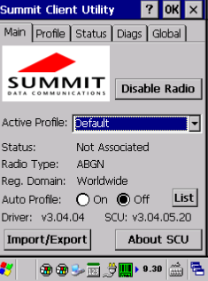
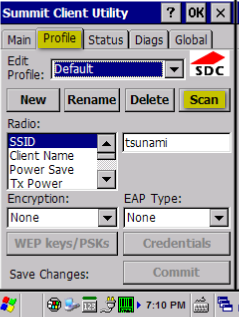
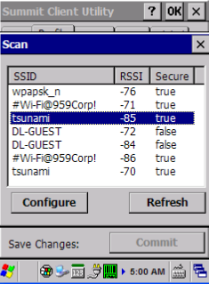
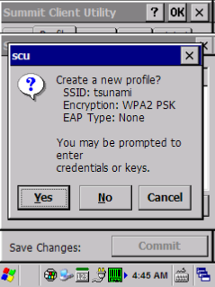
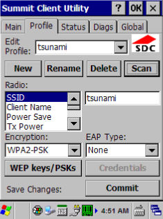
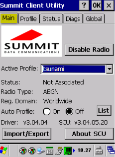
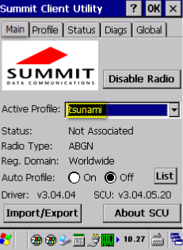
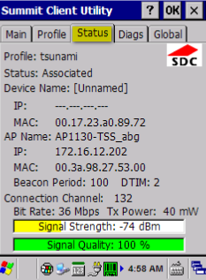

Start de scanner op en sluit het Hoofdmenu af d.m.v. het kruisje rechtsboven.
Druk op Wi-Fi.
Het scherm Summit Client Utility verschijnt.
Er moet een nieuw profiel aangemaakt worden als wifi nog niet ingesteld is op de scanner.

NB Standaard is bij Actief profielDefault ingesteld.
Ga naar tabblad Profile:
Druk op Scan.

Selecteer het juiste wifi netwerk en druk op Configure.

Druk op Yes bij aanmaken nieuw profiel.

Voer het Wifi <wachtwoord> in.
Druk op OK.
Druk op Commit.

Ga terug naar tabblad Main.

Selecteer het wifi profiel wat zojuist aangemaakt is bij Active Profile.

Druk op OK (rechtsboven).
Contoleer op het tabblad Status of er verbinding is met het wifi netwerk.

Gerelateerde onderwerpen
Copyright ©